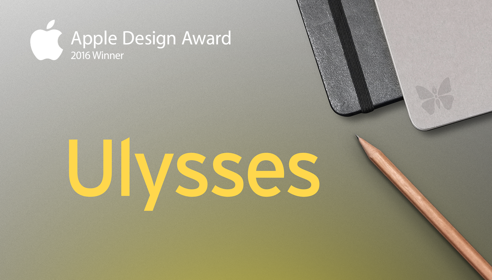
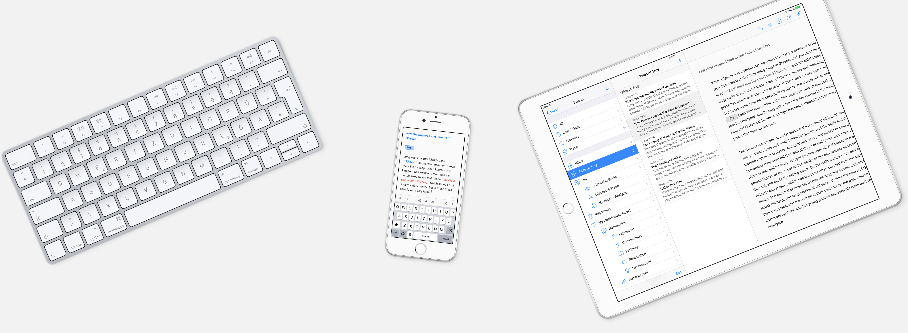
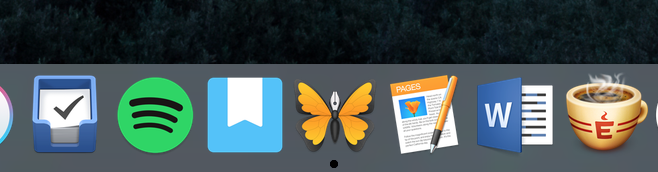

Yıllar önce kullandığım not alma -yazı yazma- programı Ulysses yenilenmiş, güncellenmiş, parlatılmış ve tekrar piyasaya çıkmış. Yaklaşık 118 ₺’lik fiyatını görünce şaşırdım tabi, önceden satın almış olduğum için bir indirim var mı acaba? diye bakarken bir upgrade ücreti olmadığını görünce hemen yükledim ve denemeye başladım, yüzeysel ilk izlenimlerim şu şekilde.

Uzun zamandır Byword kullanmakta olduğum düşünüldüğünde ve tuhaf bir biçimde -eksiklikleriyle beraber- kullanmaya alışmış olduğumdan kendisinden kolay kolay vazgeçebileceğimi düşünmüyorum ancak Ulysses’de bazı özelliklerin fazlasıyla kullanışlı olması dikkatimi çekti.
Wordpress ve Medium’a yükleme seçeneklerini saymıyorum, Byword’de de var bu özellik. Bununla birlikte Wordpress için yayınlama seçenekleri daha detaylı Byword’e göre. Yazılan yazıların bir kütüphane içerisinde toparlanması fikri Byword’de göre oldukça ileri bir özellik. Journal, Blog vb. gruplar oluşturarak (ve bunlar için ayrı uygun ikonlar seçerek) yazıları gruplandırmak hoşuma gitti. Byword’de bu işlem için kaydedilen yazıları farklı klasörler içinde organize etmek gerekiyor. Yazılan yazılar için bir gol belirleme seçeneği ise bence Ulysses’in en önemli ve en çok hoşuma giden özelliği oldu. En az 200 kelime yazmak istiyorum diyorsunuz ve yazarken ne kadar ilerlediğinizi küçük bir ilerleme ikonu ile rahatça görebiliyorsunuz.
Bu tür programlarda her zaman programcıyı ve programlam ekibini merak eden bir kişi olmuşumdur. Ulysses’in çok güzel bir web sitesi var ve sitede ekip hakkında detaylı bilgi alabileceğiniz eğlenceli bir bölüm mevcut.
Mevcut özellikleri ile yazı yazma ihtiyaçlarım için aslında tam aradığım program. Yıllar önce satın aldığımdan yüksek fiyatını bir eksi olarak değerlendirmiyorum. Yazı yazarken kaç kelime yazdığımı Byword gibi alt satırda belli belirsiz görebilsem iyi olurdu diyeceğim ama gol özelliği ile bu eksisini kapatıyor gibi sanki.

Ayrıca belirtmeden geçemeyeceğim, Ulysses’in ikonu Dock’da gerçekten -Byword’e kıyasla- çok hoş duruyor.😉